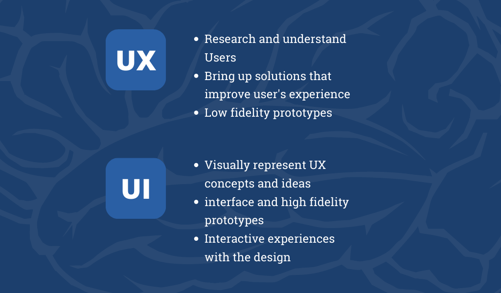
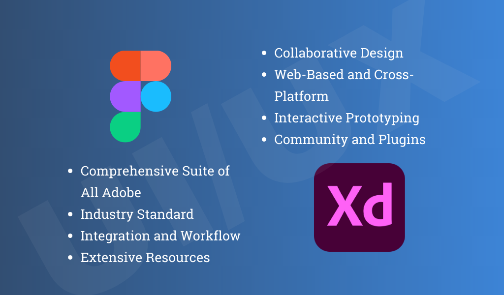

What is UI design?
When we talk about UI Design (User Interface), we are actually talking about something that’s been around for a longtime ago. Designers have always been crazy about how things look and work. The whole point of UI is all about the appearance, the vibe, the feeling and how users can interact with them. It’s like giving some personality to the product, so it’ll be unique.
But there is more, nowadays, UI design is all about the digital world. Imagine this : You’re browsing through an online store, and when you finally find out the perfect product, I mean the perfect match for you with an intuitive experience, it is all thanks to UI design. Amazing no ? At the end of the day, It's not just about being creative and making things look pretty, it's about getting inside the user's head and figuring out what feels natural and intuitive for them.
This means that UI design is all about what users see and how they interact with it. Think about colors, fonts, icons, buttons, the images, content and making sure everything looks great in different devices. We can define it as creating a whole visual playground for users to explore, enjoy and making them feel comfortable.
What does a UI designer do ?
A UI designer’s main job is to make sure that the product’s interface is engaging for the user. Simple as that, they want to create an experience that keeps the users engaged to it ! For doing that, UI designers follow a design methodology to keep everything consistent and cohesive. It’s having everything in the interface well-organized and understandable. Remember, consistency in UI design is the key.
It’s very important for our users to feel right at home when they interact with our designs. We really want to think and say, “Hey, it’s pretty easy, and I know how to use this”. But at the same time, we also want our designs to have their own and unique personality and style. We are finding the perfect balance between familiarity and originality, creating a fresh design that stand out of the crowd.
In this field, things get pretty multidisciplinary. I mean, UI designers draw upon theories from psychology and culture to make original designs happen. It’s all about understanding how people think, what they like and what motivates them. Also, remember that UI designers also care about creating accessible and inclusive designs, so everyone can interact and enjoy our design!
Lastly, it's worth mentioning that this information is based on research and best practices of design UI. Following these guidelines will help you ensure the quality of your designs.
What is UX design?
When it comes to UX design (User Experience), our main goal is all about how users interact with a product. It's all about making sure that using the product is a breeze, gets the job done efficiently, and, most importantly, is super enjoyable. This stuff is crucial because it directly impacts whether users will really connect with what we're sharing out there. So, let's make sure we create experiences that users will absolutely love!
UX design is like a big pot of different skills and fields. It brings together market research, product development, digital marketing and, of course, the star : UX design. It’s a work team to create something that not only meets but actually exceeds the user’s expectations making it unique for them. We’re talking about giving people what they want and need, creating this unique, amazing, funny and enjoyable experience.
What does a UX designer do ?
So, here’s the deal : UX designers have this cool and interesting way of working called design thinking and research. They are like scientific solving problems and turning a simple idea or concept into something incredible and useful. They take ideas and do some brainstorming, then they build some prototypes, and then they test them. It seems easy, but actually is a big research process of understanding the step-by-step journey to make sure that when users interact with the design, it’s an experience they’ll absolutely love.
To put it simply, UX designers identify user problems and then tailor solutions by understanding their target audience. It's all about creating designs that address those needs and leave users feeling happy and satisfied.
The UX design process mainly includes :
- UX Research :It mainly involves research based on data collected from the potential target population.
- Persona development : This methodology is used to define the target population with whom the designer should work. The motivations and needs of the target population are defined, and possible solutions are sought through the design of the interface. It’s like a detective mission to find the perfect fit between user desires and design solutions.
- Information Architecture : It provides a way to organize the information and gives a preliminary indication of how the process will go on.
- Wireframing : The initial wireframe is a simple and low-fidelity representation of the user's journey towards a great experience and achieving their objective.
- Prototyping and final design : Prototyping, high fidelity, shows a much more structured design, very close to the final product, and users can even interact with it. This stage is of great importance, and popular software used in the market include Figma or Adobe XD.
- User testing : We have to keep a close eye on how users actually interact with and understand our design. This helps us gather real feedback and make any necessary adjustments along the way. It's all about making sure we're truly meeting the needs of our users and giving them an experience that rocks.
What is the difference between UI and UX design?
No doubt about it, UI and UX design go hand by hand and work together as a real dream team. They both play important roles in our designs. However, it’s really important to recognize and grasp the distinctions between them. It’s pretty common to come across job offers or positions that mention UI and UX, but people often mix them as one and the same. Mistake ! We’ve got to set the record straight and understand the difference between them. Let’s understand the difference and move forward !
The key thing to remember is that UX design is all about the user's big picture experience, including their emotions and feelings. It’s like asking them and the end of the day if they had a good day, it’s the same with the UX design, because it’s about their experience using the design. On the other hand, UI design is more focused on the nitty-gritty of the interface—the visuals, the functionality, and how everything comes together. Let’s keep that in mind, son while they work hand in hand, they each have their own unique mission.
Let's break it down with a real-life example: a mobile application. The UX designer takes charge of figuring out which features should be included and ensuring the user has a smooth and enjoyable experience while interacting with the app. On the other hand, the UI designer's main focus is on the visual elements, the layout, and the content that make up the interface itself. So, easy, each of them has their own responsibility. Then, think of them as a dynamic duo, working together to make sure everything looks great and functions seamlessly.
There is more, let's dig into what experience really means. It's a big concept that includes all kinds of feelings, emotions, and motivations that push users to get things done. When it comes to an interface, it's about every little thing that happens during direct interaction with the design. For example, think about the experience of clicking that shiny "buy" button on an e-commerce page. It's not just about the action itself, but also about the excitement, satisfaction, and confidence that comes with it.
Got it ? Alright, here’s what’s going on, UX design takes charge of the whole user experience, aiming to understand it inside out and come up with the best solutions. On the flip side, UI design zooms in on the interface itself. They handle things like typography, colors, styles, spaces, and icons, but they also tackle functionality, layout, navigation, and how users interact with the interface as a whole. It's similar they're the artists and architects of the visual and interactive magic that happens on the screen. Together, they make sure our designs are both beautiful and super user-friendly, making a UI/UX collaboration that rocks.
Now that you've got the hang of it, you can really see how UI and UX design are unique in their own ways. You'll notice that even though they often go hand in hand in job postings, they're actually quite different. But hey, that's what makes both paths so exciting! In this digital age, there's a ton of amazing work to be done, and these fields are buzzing with opportunities.
How do UI and UX work together?
Now that we've grasped the distinctions, let's dive into how UI and UX design work together as a team to create awesome products. The magic happens when these two collaborate because they're like two peas in a pod, inseparable and perfectly complementary. Picture this: a stunning interface design won't mean a thing if it doesn't understand and cater to the users' needs. That's why UI and UX design join forces to ensure both the look and the functionality of the product are spot on.
So, the way in which the UI UX design interacts can be evidenced in the different stages of the product design, let me explain to you in a super easy way the all process :
UX Research
So, let's break it down into stages that are easier to understand. The first stage kicks off with UX design, and it's all about doing some solid research. This helps us identify the problems that users might face and come up with awesome solutions. Next up, we define user personas, which are like fictional characters that represent the traits and preferences of our target audience.
To better understand the user experience, the UX designer creates a map that shows the journey users take while interacting with the product.
During this research phase, there may not be much direct interaction between UX and UI design, but it's still important for the UI designer to pay attention to these elements. After all, they can have a big impact on the overall design.
Creating low fidelity prototypes
Moving forward, the UX design team takes the reins and starts crafting a low-fidelity prototype. This means creating a basic visual representation of the different stages. At this stage, the focus is not on making things visually appealing just yet. The main objective is to dive deep into the details of the user's journey.
In parallel, it's essential to conduct user testing. This helps ensure that the prototype we've created is user-friendly and easy to understand. By doing so, we make sure we're on the right track and create a model that users will love to interact with. Let's keep testing and refining to make our design shine!
Creating high fidelity prototypes
Now it's time to shift our focus to the UI design side. Building upon the groundwork laid by the UX design, the UI designers take charge. Their main responsibility is to bring to life various elements that will appear on each page or screen of the product. This includes designing buttons, icons, typography, graphics, and even adding delightful animations. They make thoughtful decisions about color schemes, ensuring enough contrast between elements. They also establish a visual hierarchy, making sure that important elements stand out and catch the user's attention effortlessly.
In fact, UI design can take things a step further by creating prototypes that feel so real that users can actually start interacting with them. For instance, they can design elements that react to clicks or simulate the flow between different pages. These designs can be created using handy tools like Figma or Adobe XD, making the process even more efficient and interactive.
What tools do UI and UX designers use?
Figma
Figma is super popular in the design world, and it's not hard to see why. It's widely used across different job roles, and its collaborative features make it a go-to tool for seamless project execution with diverse teams.
Adobe XD
Adobe XD is a rock star tool that designers love, especially if they're already familiar with the Adobe Suite. One of its biggest strengths is how seamlessly it integrates with other Adobe programs like Photoshop, InDesign, and Illustrator. So, if you're already comfortable with those, you'll feel right at home with Adobe XD.
With Adobe XD, the possibilities are endless. It's intuitive, easy to learn, and packed with features that will elevate your design game. So, let's jump into Adobe XD and unleash our creativity like never before!
Recap of UI vs Ux design
Knowing the distinction between UI and UX design is vital for anyone interested in a career in this field. UI design focuses on the visuals and interactions, while UX design is all about creating a smooth and enjoyable user experience. These two disciplines work together to make products shine.
UI designers are the ones responsible for crafting visually stunning interfaces that are user-friendly and consistent. They consider factors like colors, typography, icons, and responsiveness. On the other hand, UX designers apply design thinking to identify and solve user problems. They conduct research, develop personas, design information architecture, create wireframes and prototypes, and carry out user testing.
Throughout the product design process, UI and UX design collaborate closely. UX research informs UI design decisions, while low-fidelity prototypes crafted by UX designers map out the user journey. UI designers then take the reins to build high-fidelity prototypes that provide interactive experiences. This integration ensures that products not only meet user expectations but also deliver a seamless user experience.
When it comes to tools, professionals often favor Figma and Adobe XD. Figma excels with its collaborative features, allowing designers to create interfaces and prototypes. On the other hand, Adobe XD, as part of the Adobe suite, seamlessly integrates with other programs and boasts an intuitive interface. Both tools enable designers to produce top-notch designs and test them with real users.
In the exciting world of UI and UX design, there are ample opportunities that require a deep understanding of user needs, aesthetics, and functionality. By honing skills in both disciplines and utilizing the right tools, designers can create exceptional products that leave a lasting impact in the digital realm. So, let's dive in, unleash our creativity, and make a difference in the design landscape!